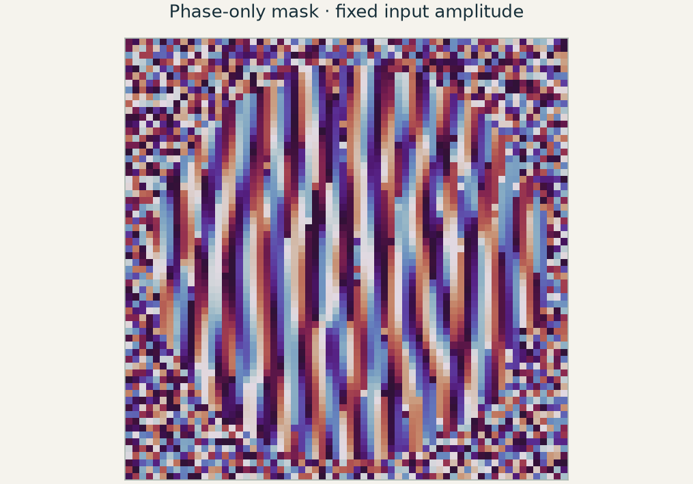

当前概念
复振幅与相位
本章涉及
同时保留振幅与相位，描述探测器测量强度之前的光场行为。

本章涉及的概念
在知识图谱中查看本章 ↓E10 / 为什么学这一课？
你希望相位掩模产生指定强度图案，但每个像素都是一个设计变量。逐一扰动所有像素，会让每次优化迭代十分昂贵。你需要一次求出同一目标函数对全部变量的敏感度。
你将学会： 通过伴随计算求出并验证梯度，用它改进图案，同时评估设计结果，不把误差降低误认为达到全局最优。
学习 E10 之前 / 预备知识
针对不熟悉的概念阅读指定章节，然后回到本课。
第 32、34 节介绍多变量链式法则，第 35 节介绍梯度，第 38 节介绍方向导数。
重点阅读复向量、共轭转置、厄米矩阵和酉矩阵。结尾的 FFT 算法可选学。
先读 §4.1 的变换对，再读 §4.2.1–4.2.4 的线性、缩放、平移和卷积。连续两次变换可参阅 §4.2.7。
Python 实验准备： 使用复数数组，并将解析导数与有限差分扰动比较。
NumPy · 初学者基础指南 ↗ · NumPy · 离散傅里叶变换 ↗
本课将展开： 推导、检验并使用伴随相位梯度；不要求预先了解伴随优化。
浏览全部预备知识与学习资源 →E10 / 五分钟短片
先观看短片，再用下方实验亲手检验其中的概念。
5:15 · E10 · 用梯度设计光场在 YouTube 观看 ↗
视频 / 跟随推理
为什么只多求解一次，就能得到成千上万个设计参数的梯度？
先沿着大纲理解视频论证，再展开跳得太快的环节。时间点为近似值，点击可回看对应片段。
直接敏感度方法为每个参数分别求解 ∂x/∂pj。伴随法则只求一个 λ，用来表示标量目标对整个场的敏感度。知道 x 与 λ 后，每个参数导数只需计算对应收缩；局部材料参数会让这种收缩尤其便宜。
“两次求解”指线性场问题中，一个标量目标、一个源与频率状态所需的一次前向加一次伴随。多个独立状态通常需要更多前向与伴随计算，每次优化迭代也要重复。较便宜的收缩和参数滤波仍随设计规模增长。
复光场与实目标函数需要明确求导约定。上面的厄米伴随形式使用 A†；对伴随变量与源作适当共轭后，也可以得到等价的转置求解形式。视频中 Aᵀ 的图像假设算子互易且表示方式适当；对称并不意味着 A 为实数或厄米矩阵。
伴随源应按目标导数加权，不能简单地在每个输出放一个相同光源。损耗、非互易性、吸收边界和离散化都会让字面上的时间反演叙述不够完整。真正必须满足的是：伴随方程与被求导的具体离散前向计算一致。
无损介质中 kz 为实数时，H 的模为一，共轭等价于反转 z。对倏逝分量，伴随保留衰减，数学逆算子却会放大它。孔径截断与损耗也会使伴随不同于逆算子。敏感度反传不会恢复前向模型抹掉的信息。
离散 FFT 的伴随同样涉及归一化因子，除非采用幺正变换定义。自动微分跟踪的是实际实现，包括这些系数。使用自定义反向算子之前，应把方向导数与有限差分比较。
优化器会利用它所看到的模型中的机会。中间材料值、网格以下的特征、遗漏的矢量效应、过窄的训练波长或不现实的重建噪声模型，都可能只改善仿真评分而不改善真实器件。正确梯度无法自动修补不完整的目标或前向模型。
应参数化或约束可制造结构，在目标中纳入相关波长、光源、深度和噪声，并用加密设置或独立求解器验证最终几何。比较时应使用相同基线与工作条件。基于梯度的改善是局部的，不能证明全局最优。
正向建模回答器件会做什么；设计则要找出哪些参数能让它完成有用的任务。这里的参数是固定振幅瞳面上的相位延迟。酉傅里叶变换产生输出光场，再将其强度与目标比较。
孔径 a 与目标 T 只在开始时归一化一次，使总功率相同。损失衡量的是强度失配，而非振幅失配。中心有限差分需要对每个 φ 分别做正负扰动，正向计算次数约为参数数量的两倍。
反向微分复用最终误差的影响。先计算输出光场 v 和残差 r = |v|² − T，再用残差对该光场加权，通过厄米伴随 F† 传播。最后与输入光场做一次重叠计算，就得到所有实数相位导数。
复共轭和因子 2 都不可缺少。Notebook 从 dJ = 2 Re(q†dv) 推导该表达式，再与数值扰动比较。一幅看起来合理的敏感度图，并不能代替梯度检验。
调整参数之前，先做预测
一个掩模有 4,096 个可调相位像素和一个标量损失。中心有限差分梯度需要多少次扰动模拟？什么计算能够在所有像素之间复用工作？
02 / 检验预测
所有光场和曲线均由所述模型计算得到。检验预测时，请固定其余参数。
模型： 64 × 64 标量纯相位瞳面，振幅固定为圆形孔径，使用酉傅里叶传播算子。各目标具有相同总功率。浏览器优化不包含像素耦合、材料色散、噪声或加工约束。可选亥姆霍兹示例使用有损边界层，明确不属于 PML。
线性光场算子 P 的伴随 P† 由复数内积定义：⟨Px,y⟩ = ⟨x,P†y⟩。它将标量目标的敏感度通过模型反向传递。对于酉傅里叶变换，伴随等于逆变换，因此本例特别简单。
这种相等关系并不普遍。如果传播在频谱基中是对角的，传递因子为 H，则伴随使用 H*，逆运算使用 1/H。倏逝衰减在伴随下仍然是衰减，逆传播却会放大它。因此，有损系统可以说明为什么不能把伴随笼统理解为“让光倒着走”。
设离散频域模型为 A(p)x = b。实数标量目标给出输出敏感度 q = ∂J/∂x*，然后求解 A†λ = q。若 b 与参数无关，每个实数参数的导数为 −2 Re[λ†(∂A/∂p)x]，再加上目标对该参数的显式依赖。
可选稀疏亥姆霍兹示例严格采用这一厄米约定，并检验所有像素导数。如果源项与重叠计算中的共轭保持一致，也可使用等价的转置约定。混用两种约定，常会得到结构看似合理、符号却错误的梯度。
浏览器使用带固定随机种子的初始相位和回溯下降。每次接受的更新都必须降低所定义的损失。对一个标量目标计算梯度，需要一次正向与一次伴随运算；线搜索还会增加正向试算。计数器会报告这些额外计算，而不会将它们隐藏在“只需两次模拟”的说法中。
目标函数是非凸的，不同初值可能到达不同局部解。在数值模型中有效的相位图案，也可能在量化、平滑或采用更精确波动模型后失效。Notebook 会施加加工投影，再重新评估器件。较低的训练损失是有用证据，但不是全局最优或实验性能的保证。
04 / 检查理解
先做预测，再查看解释。
独立运行的 Python 实验会逐步构建模型、绘制结果，并用独立预测检验计算。实验使用 NumPy、SciPy 和 Matplotlib，在 CPU 上运行，无需克隆仓库、使用 GPU 或下载外部数据集。
寻找截断误差和舍入误差都较小的中间步长范围，同时比较相对误差与绝对误差。
一次正向加一次伴随得到一个目标的梯度；回溯与验证需要额外计算。
加工投影可能降低性能。优化可以纳入相关模型约束，但仅有连续相位掩模的结果还不够。
在小型有损稀疏亥姆霍兹模型中检验每个梯度分量，比较伴随约定，并在优化后评估量化或平滑相位掩模。
Notebook 中已明确标出拓展部分。请先完成核心实验及其检验。
64 × 64 标量纯相位瞳面，振幅固定为圆形孔径，使用酉傅里叶传播算子。各目标具有相同总功率。浏览器优化不包含像素耦合、材料色散、噪声或加工约束。可选亥姆霍兹示例使用有损边界层，明确不属于 PML。
配套短片： 观看上方 E10 短片 (5:15).
E10 / 概念之间的联系
标出的概念是本章内容。选择任意概念，探索相关章节。
连线表示概念之间的关系，不代表必须遵循的章节顺序。
先选择核心概念，需要深入时再展开具体术语。
当前概念
本章涉及
同时保留振幅与相位，描述探测器测量强度之前的光场行为。
当前概念
本章涉及
用空间频率分量描述光场。同一种表示方式串起传播、成像、重建与设计。
当前概念
推进各个分量，再将它们叠加，从而追踪光场在空间中的传播。
传播分量在传播过程中积累相位。
角谱将光场分解为平面波。
比较标量传播与电磁场模型。
离散传播需要考虑混叠与计算窗口的限制。
当前概念
从光场的相关性理解相机平均后保留的现象：干涉、条纹可见度和散斑。
当前概念
用点响应与频率传递，理解光学图像能够承载哪些细节。
当前概念
借助参考光，或对强度测量施加约束，恢复光场信息。
当前概念
本章涉及
把所需的相位分布变成光学元件，再考察相位包裹、量化和波长依赖。
当前概念
从重复结构出发，联系衍射方向、布洛赫传播，以及结构阻挡的频段。
当前概念
寻找与算子或结构相适应的光场模式。相关的本征值方法也用于描述布洛赫波与统计意义上的相干模。
单周期算子的本征值给出布洛赫因子。
都使用本征分解，但描述的物理对象不同。
本征场与时域演化提供互补的观察角度。
当前概念
理解连续光场变成数组后发生的变化：采样限制、计算窗口与导数近似。
网格间距与时间步长影响数值误差。
离散传播需要考虑混叠与计算窗口的限制。
区分采样限制与光学截止频率。
当前概念
在网格上推进相互耦合的电场与磁场，并检验时间步长和边界处理的精度。
当前概念
本章涉及
用一个标量目标与伴随计算，求出每个设计参数如何改变结果。